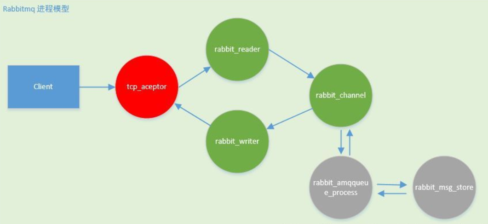
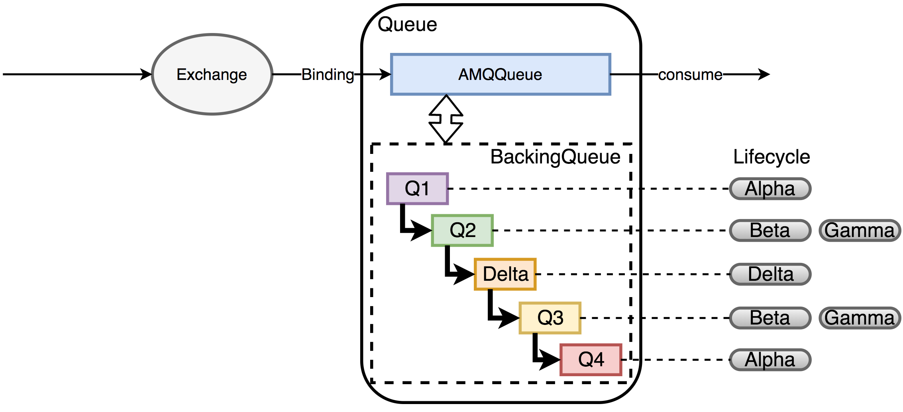
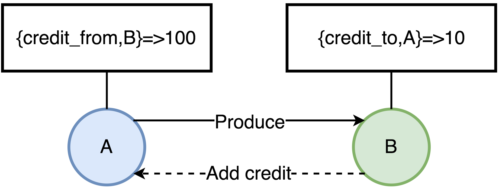
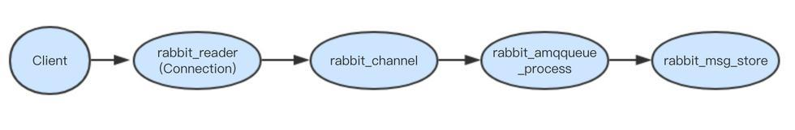
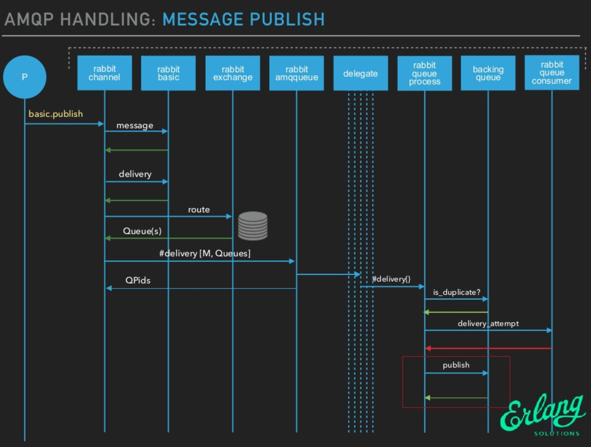
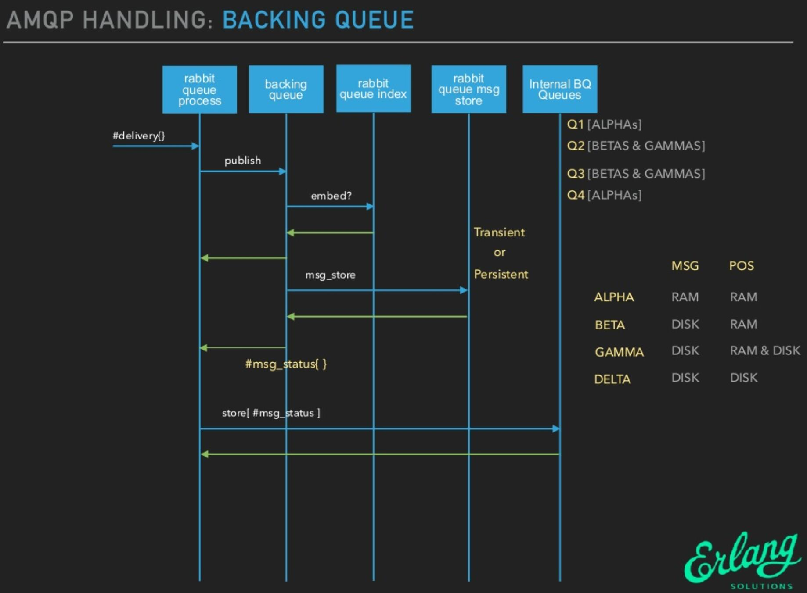
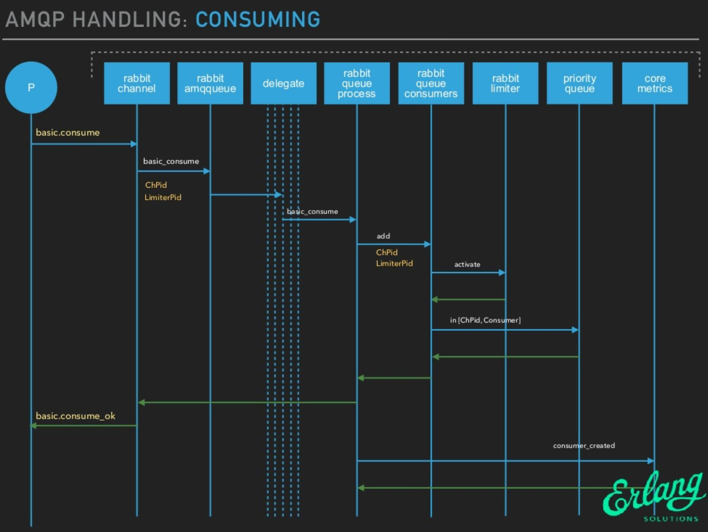

RabbitMQ如何存储消息，RabbitMQ如何接收消息和投递消息？
RabbitMQ的内部结构
RabbitMQ的进程结构

事件驱动模型（或者说反应堆模型），这是一种高性能的非阻塞io线程模型，在Erlang中称为进程模型。
cp_acceptor：负责接受客户端连接，然后为客户端连接创建rabbit_reader
、rabbit_writer、rabbit_channel进程rabbit_reader：负责解析客户端AMQP帧，然后将请求发送给rabbit_channel进程rabbit_writer：负责向客户端返回数据rabbit_channel：负责解析AMQP方法，以及对消息进行路由，然后发送给对应的队列进程。rabbit_amqqueue_process：rabbit队列进程，该进程一般在rabbitmq创建队列时被创建，其主要负责消息的接收/投递逻辑rabbit_msg_store：存储服务器进程，主要负责消息的持久化存储
- tcp_acceptor和rabbit_msg_store只会有一个;
- rabbit_amqqueue_process进程的数量则和队列数量保持一致;
- 每个客户端连接对应一个rabbit_reader和rabbit_writer进程;
- 每一个连接的通道对应一个rabbit_channel进程。
通常来说，客户端发起一条connection的同时，可以打开多条channel，相对connection的open/close来说，对channel进行open和close的操作开销会更小。
最佳实践是一个生产者/消费者进程对应一个connection，具体发送时，一个线程对应一个channel即可。
RabbitMQ中队列的内部结构

- RabbitMQ完全实现了AMQP协议，类似于一个邮箱服务。Exchange负责根据ExchangeType和RoutingKey将消息投递到对应的消息队列中，消息队列负责在消费者获取消息前暂存消息。
- 在RabbitMQ中，
MessageQueue主要由两部分组成，AMQPQueue：实现AMQP协议的逻辑功能，包括接收消息，投递消息，Confirm消息等；BackingQueue：提供AMQQueue调用的接口，完成消息的存储和持久化工作
RabbitMQ中队列的存储状态
BackingQueue由Q1,Q2,Delta,Q3,Q4五个子队列构成，在BackingQueue中，消息的生命周期有4个状态：
| queue | state\store | message itself | message index(message position) |
|---|---|---|---|
| q1,q4 | alpha | RAM | RAM |
| q2,q3 | beta | DISK | RAM |
| q2,q3 | gamma | DISK | RAM&DISK |
| delta | delta | DISK | DISK |
alpha: 消息的内容和消息索引都在RAM中。（Q1，Q4）beta: 消息的内容保存在Disk上，消息索引保存在RAM中。（Q2，Q3）gamma: 消息的内容保存在Disk上，消息索引在DISK和RAM上都有。（Q2，Q3）delta: 消息内容和索引都在Disk上。(Delta）
5个内部队列
- q1和q4队列中只有alpha状态的消息；
- q2和q3包含beta和gamma状态的消息；
- delta队列是消息按序存盘后的一种逻辑队列，只有delta状态的消息。所以delta队列并不在内存中，其他4个队列则是由erlang queue模块实现。
这里以持久化消息为例（可以看到非持久化消息的生命周期会简单很多），从Q1到Q4，消息实际经历了一个RAM->DISK->RAM这样的过程，
BackingQueue的设计有点类似于Linux的虚拟内存Swap区，
- 当队列
负载很高时，通过将部分消息放到磁盘上来·节省内存空间`， - 当
负载降低时，消息又从磁盘回到内存中，让整个队列有很好的弹性。
因此触发消息流动的主要因素是：
消息被消费；内存不足。
- RabbitMQ会根据
消息的传输速度来计算当前内存中允许保存的最大消息数量（Traget_RAM_Count）， - 当
内存中保存的消息数量 + 等待ACK的消息数量 > Target_RAM_Count时，RabbitMQ才会把消息写到磁盘上， - 所以说虽然理论上消息会按照
Q1->Q2->Delta->Q3->Q4的顺序流动，但是并不是每条消息都会经历所有的子队列以及对应的生命周期。 从RabbitMQ的Backing Queue结构来看，当
内存不足时，消息要经历多个生命周期，在Disk和RAM之间置换，这实际会降低RabbitMQ的处理性能（后续的流控就是关联的解决方法）。对于持久化消息，RabbitMQ先将消息的内容和索引保存在磁盘中，然后才处于上面的某种状态（即只可能处于
alpha、gamma、delta三种状态之一）。the term
gammaseldom appears.
RabbitMQ的流控-信用机制(Credit)
- 当RabbitMQ出现内存(默认是0.4)或者磁盘资源达到阈值时，会触发流控机制：
阻塞Producer的Connection，让生产者不能继续发送消息，直到内存或者磁盘资源得到释放。 - Erlang进程之间并不共享内存（binaries类型除外），而是通过消息传递来通信，每个进程都有自己的进程邮箱。Erlang默认没有对进程邮箱大小设限制，所以当有大量消息持续发往某个进程时，会导致该进程邮箱过大，最终内存溢出并崩溃。
- 在RabbitMQ中，如果生产者持续高速发送，而消费者消费速度较低时，如果没有流控，很快就会使内部进程邮箱大小达到内存阈值，阻塞生产者（得益于block机制，并不会崩溃）。然后RabbitMQ会进行page操作，将内存中的数据持久化到磁盘中。
- 因此，要保证各个进程占用的内容在一个合理的范围，RabbitMQ的流控采用了一种
信用机制(Credit)，为每个进程维护了4类键值对：{credit_from,From}-该值表示还能向消息接收进程From发送多少条消息;{credit_to,To}-表示当前进程再接收多少条消息，就要向消息发送进程增加Credit数量;credit_blocked-表示当前进程被哪些进程block了，比如进程A向B发送消息，那么当A的进程字典中{credit_from,B}的值为0是，那么A的credit_blocked值为[B];credit_deferred-消息接收进程向消息发送进程增加Credit的消息列表，当进程被Block时会记录消息信息，Unblock后依次发送这些消息;

如图所示:
- A进程当前可以发送给B的消息有100条，每发一次，值减1，直到为0，A才会被Block住。
- B消费消息后，会给A增加新的Credit，这样A才可以持续的发送消息。
这里只画了两个进程，多进程串联的情况下，这中影响也就是从底向上传递的。
RabbitMQ的消息状态
每个消息存储在RabbitMQ中都有自己的状态：Ready，Unacked,Ack
- Ready：等待消费状态。
- Unacked:等待被确认状态，当前消息已经被发送到了客户端。当客户端端断开后，如果这条消息没有被确认，这条消息重新进入Ready中。
- Ack：已被确认状态
RabbitMQ的消息类型
Messages, and their position in the queue, can be in memory or on disk, or both.
Persistent messageswill have both message and position pushed to disk as soon as they arrive;Transient messagescan be written to disk (and thus both types can be evicted from memory) under memory pressure.
The question of whether a message is in RAM and whether it is persistent are orthogonal（正交，即可同时存在）.
Messages are persisted using the queue index（队列索引） and the message store（消息数据）.
queue indexholds thepositionof the message within this queue along with a couple of small bits ofmetadatamessage storeholds the message itself (including headers and other properties).small messagescan be embedded directly in the queue index and bypass the message store altogether.
RabbitMQ的消息存储
RabbitMQ的消息持久化实际包括两部分：
队列索引(rabbit_queue_index)：负责维护队列中落盘消息的信息，包括消息的存储地点、是否已经被交付给消费者、是否已被消费者ack等，每个队列都有一个与之对应的rabbit_queue_index。消息存储(rabbit_msg_store)：rabbit_msg_store以键值对的形式存储消息，每个节点有且只有一个，所有队列共享。rabbit_msg_store又可以分为msg_store_persistent和msg_store_transient，- msg_store_persistent负责持久化消息的存储，不会丢失，
- msg_store_transient负责非持久化消息的存储，重启后消息会丢失。
通过配置环境变量
RABBITMQ_MNESIA_BASE可以指定存储目录，一般配置RABBITMQ_MNESIA_BASE=/srv/rabbitmq。
1 | $ ls -hl /var/lib/rabbitmq/mnesia/rabbit65 | grep msg_store |
其中msg_store_transient、queues和msg_store_persistent就是实际消息的存储目录。
rabbit_msg_store存储
- RabbitMQ通过配置queue_index_embed_msgs_below可以指定根据消息存储位置，
- 默认queue_index_embed_msgs_below是
4096字节(包含消息体、属性及headers)，小于该值的消息存在rabbit_queue_index中。
1 | sudo ls -hl /var/lib/rabbitmq/mnesia/rabbit65/msg_store_persistent |
- 经过rabbit_msg_store处理的消息都会以
追加的方式写入到文件中，文件名从0开始累加，后缀是.rdq， - 当一个文件的大小超过指定的限制(
file_size_limit)后，关闭这个文件再创建一个新的文件存储。
rdq文件消息格式
<<Size:64, MsgId:16/binary, MsgBody>>
- MsgId为RabbitMQ通过rabbit_guid:gen()每一个消息生成的GUID，
- MsgBody会包含消息对应的
exchange，routing_keys，消息的内容，消息对应的协议版本，消息内容格式。
- 消息存储时，RabbitMQ会在
ETS(Erlang Term Storge)表中记录消息在文件中的位置映射和文件的相关信息。 - 消息读取时，先根据消息的
msg_id找到对应的文件，如果文件存在且未被锁住则直接打开文件，如果文件不存在或者锁住了则发请求到rabbit_msg_store处理。
队列的索引文件
查看索引信息1
2
3
4 ls -hl /var/lib/rabbitmq/mnesia/rabbit65/queues/9ETDQOQ2E4JS49H80ILRO1YHA
total 24K
-rw-r--r-- 1 rabbitmq rabbitmq 21K Aug 14 20:19 1.idx
-rw-r--r-- 1 rabbitmq rabbitmq 0 Aug 14 20:19 journal.jif
- rabbit_queue_index顺序存储段文件，文件编号从0开始，后缀.idx，
- 每个段文件包含固定的
SEGMENT_ENTRY_COUNT条记录。 - SEGMENT_ENTRY_COUNT默认是
16384，每个rabbit_queue_index从磁盘读取消息的时候至少读取一个段文件。
RabbitMQ的消息读写过程

- rabbit_channel进程确定了消息将要投递的目标队列，
- rabbit_amqqueue_process是队列进程，每个队列都有一个对应的进程，实际上rabbit_amqqueue_process进程只是提供了逻辑上对队列的相关操作，他的真正操作是通过调用指定的backing_queue模块提供的相关接口实现的，
- 默认情况该backing_queue的实现模块为rabbit_variable_queue。
消息publish
rabbit_amqqueue_process对消息的主要处理逻辑位于deliver_or_enqueue函数，该方法将消息直接传递给消费者，或者将消息存储到队列当中。
整体处理逻辑如下：
- 首先处理消息的
mandory标志，和confirm属性。- mandatory标志告诉服务器至少将该消息route到一个队列中，否则将消息返还给生产者。
- confirm则是消息的发布确认。
- 然后判断队列中是否有消费者正在等待，如果有则直接调用
backing_queue的接口给客户端发送消息。 - 如果队列上没有消费者，根据当前相关设置判断消息是否需要
丢弃，不需要丢弃的情况下调用backing_queue的接口将消息入队。


- 如果调用到该方法的BQ:publish则说明当前队列没有消费者正在等待，消息将进入到队列。backing_queue实现了消息的存储，他会尽力将durable=true的消息做持久化存储。
- 初始默认情况下，
非持久化消息直接进入内存队列，此时效率最高，当内存占用逐渐达到一个阈值时，消息和消息索引逐渐往磁盘中移动，随着消费者的不断消费，内存占用的减少，消息逐渐又从磁盘中被转到内存队列中。 - 消息在这些Queue中传递的”一般”过程
q1->q2->delta->q3->q4，一般负载较轻的情况消息不需要走完每个Queue，大部分都可以跳过。 - 每次入队消息后，判断RabbitMQ系统中使用的内存是否过多，此操作是尝试将内存中的队列数据写入到磁盘中.
- 内存中的消息数量（RamMsgCount）及内存中的等待ack的消息数量（RamAckIndex）的和大于允许的内存消息数量（TargetRamCount）时，多余数量的消息内容会被写到磁盘中.
消息consuming

获取消息
- 尝试从q4队列中获取一个消息，如果成功，则返回获取到的消息，如果失败，则尝试通过试用fetch_from_q3/1从q3队列获取消息，成功则返回，如果为空则返回空；
- 注意fetch_from_q3从Q3获取消息，如果Q3为空，则说明整个队列都是空的，无消息，消费者等待即可。
取出消息后
- 如果Q4不为空，取出消息后直接返回；
- 如果Q4为空，Q3不为空，从Q3取出消息后，判断Q3是否为空，如果Q3为空，Delta不为空，则将Delta中的消息转移到Q3中，下次直接从Q3消费；
- 如果Q3和Delta都是空的，则可以认为Delta和Q2的消息都是空的，此时将Q1的消息转移到Q4，下次直接从Q4消费即可。
过期消息删除
消息的删除只是从ETS(Erlang Term Storge)表删除执行消息的相关信息，同时更新对应的存储文件的相关信息，并不立即对文件中的消息进程删除，后续会有专门的垃圾回收进程负责合并待回收消息文件。
标记删除，类似habse/cassandra里面的
tombstone
当所有文件中的垃圾消息（已经被删除的消息）比例大于阈值（
GARBAGE_FRACTION = 0.5）时，会触发文件合并操作（至少有3个文件存在的情况下），以提高磁盘利用率。类似hbase中的
minor/major compaction
执行合并的两个文件一定是逻辑上相邻的两个文件。执行合并时首先锁定这两个文件，并对前面文件中的有效数据进行整理，再将后面文件的有效数据写入到前面的文件，同时更新ETS表中的记录，最后删除后面的文件publish消息时写入内容，ack消息时删除内容（更新该文件的有用数据大小），当一个文件的有用数据等于0时，删除该文件。
问题
消息什么时候会刷到磁盘？
- 写入文件前会有一个
Buffer，大小为1M（1048576），数据在写入文件时，首先会写入到这个Buffer，如果Buffer已满，则会将Buffer写入到文件（未必刷到磁盘）； - 有个
固定的刷盘时间：25ms，也就是不管Buffer满不满，每隔25ms，Buffer里的数据及未刷新到磁盘的文件内容必定会刷到磁盘； - 每次消息写入后，如果没有后续写入请求，则会直接将已写入的消息刷到磁盘：使用Erlang的
receive x after 0来实现，只要进程的信箱里没有消息，则产生一个timeout消息，而timeout会触发刷盘操作。
消息文件何时删除？
- 当所有文件中的垃圾消息（已经被删除的消息）比例大于阈值（
GARBAGE_FRACTION = 0.5）时，会触发文件合并操作（至少有三个文件存在的情况下），以提高磁盘利用率。 publish消息时写入内容，ack消息时删除内容（更新该文件的有用数据大小），当一个文件的有用数据等于0时，删除该文件。